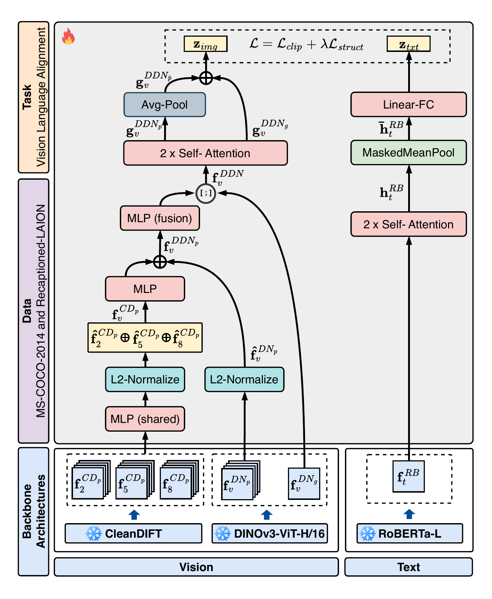
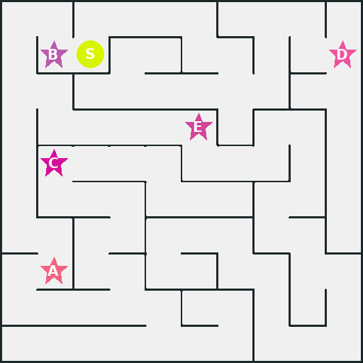
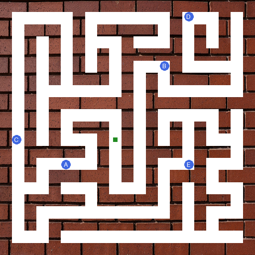
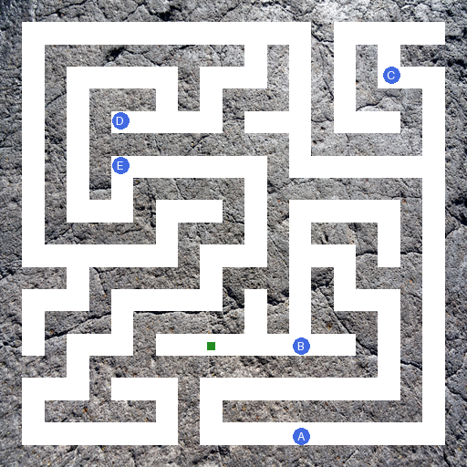
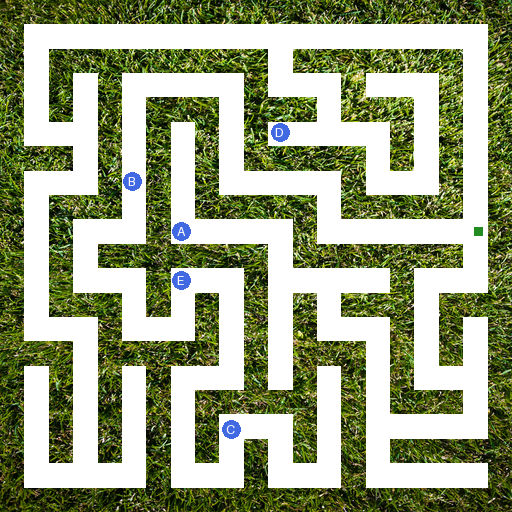
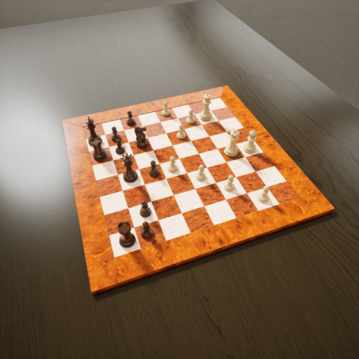
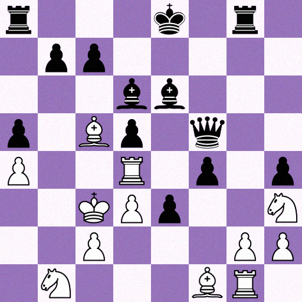
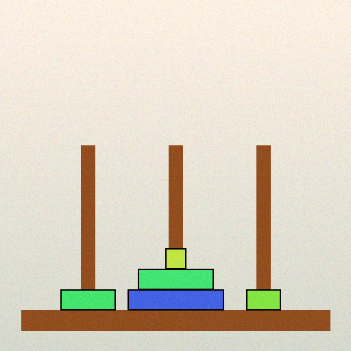
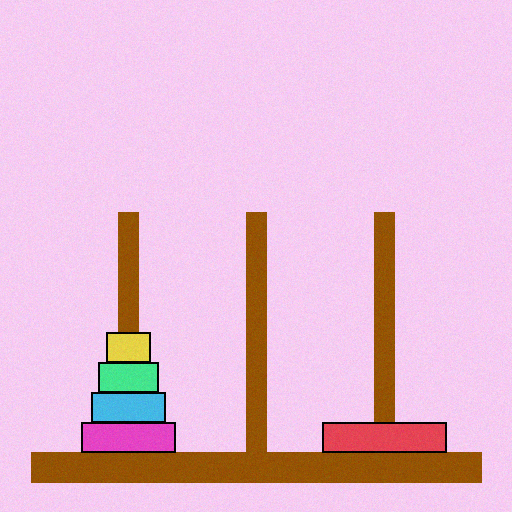

A text-aligned fused encoder
TDDN fuses CleanDIFT and DINOv3, then aligns to language on frozen backbones and 590K pairs without giving up its dense-perception advantage.
Structured visual reasoning, like solving image puzzles, needs fine-grained visual perception, an ability that CLIP-based VLM backbones largely lack because they trade spatial detail for high-level semantics. We recover it by fusing ViT (DINOv3) and Diffusion (CleanDIFT) representations into a perception encoder we call DiffusedDINO, then align it with RoBERTa-L to get a text-aligned model we call TDDN. With frozen backbones and only 590K alignment pairs, TDDN matches CLIP on image-text retrieval and triples its dense-prediction accuracy (ADE20K 5.20 → 18.11 mIoU), and it leads on segmentation among general-purpose contrastive encoders including SigLIP 2. We also introduce Puzzle Perception, a puzzle-based segmentation and VQA dataset, on which TDDN doubles CLIP's accuracy (11.04 → 22.51 mIoU).
TDDN fuses CleanDIFT and DINOv3, then aligns to language on frozen backbones and 590K pairs without giving up its dense-perception advantage.
TDDN's predicted regions improve VLM puzzle perception through Contrastive Region Guidance, with no weights updated and no segmentation supervision.
The first puzzle benchmark pairing pixel-level segmentation with visual question answering in the same structured domains.
DiffusedDINO pairs CleanDIFT decoder activations from layers 2, 5, and 8 with DINOv3 final-layer patch tokens. CleanDIFT resolves fine spatial boundaries without noise or timestep tuning, while DINOv3 stays semantically organized and patch-consistent. We project each CleanDIFT layer to a shared 512-d space, fuse the result with the DINOv3 patch tokens, and pass the fused tokens through two trainable self-attention blocks.

TDDN architecture. The frozen CleanDIFT UNet and DINOv3 ViT-H/16+ feed a trainable fusion path, and RoBERTa-L stays frozen on the text side. We train only the per-layer MLPs, the fusion MLP, the self-attention blocks, and the text projection, about 80M parameters over 5,000 iterations on 4×A100 GPUs in roughly 15 hours.
To align this encoder with text, we pair it with a frozen RoBERTa-L and train only lightweight attention and projection heads. The objective follows the low-data recipe of STRUCTURE: a symmetric InfoNCE loss over image-text pairs, plus a regulariser anchored on frozen DINOv3 that preserves the geometry of each pretrained latent space. That regulariser keeps alignment from eroding the fine-grained structure the fusion is built to capture. Because every backbone stays frozen and the objective, data, and schedule are fixed across conditions, any gain over CLIP comes from the fused representation itself.
Existing datasets each cover half of this problem. Segmentation benchmarks like COCO-Stuff and ADE20K give pixel-level annotations but no question-answering task, while puzzle-reasoning benchmarks like PuzzleVQA and AlgoPuzzleVQA test reasoning over structured scenes but offer no dense supervision. Puzzle Perception pairs both across four domains, rendered at 512×512 over 30 classes with masks taken straight from the rendering pipeline. None of its images appear in the alignment corpus, so every result on it is zero-shot transfer.
| Puzzle | Seg | PVQA | Classes | Train | Val | Test |
|---|---|---|---|---|---|---|
| Maze | ✓ | ✗ | 8 | 2,000 | 500 | 500 |
| Chess | ✓ | ✓ | 15 | 2,000 | 500 | 500 |
| Tower of Hanoi | ✓ | ✗ | 7 | 2,000 | 500 | 500 |
| N-Queens | ✗ | ✓ | 2 | – | – | 100 |
Table 1. Statistics of the Puzzle Perception dataset, spanning three structured visual reasoning tasks designed for both dense segmentation (Seg) and puzzle-based visual question answering (PVQA).








Maze varies wall texture while holding topology fixed, Chess mixes 2D and 3D renders, Tower of Hanoi spans arrangements up to five disks per peg, and N-Queens varies board size from 8×8 to 11×11.
We project patch features onto their top three principal components. CLIP produces fragmented, spatially inconsistent maps on structured images. DiffusedDINO keeps CleanDIFT's boundary precision and recovers DINOv3's object-level signal, and TDDN preserves that structure after text alignment.

TDDN matches or exceeds SigLIP 2 on all five segmentation benchmarks and outperforms MetaCLIP, OpenCLIP, and DFN across the board, using 590K alignment pairs against their billions. Its gain over TDN (+1.6 ADE20K, +8.1 Cityscapes, +3.8 COCO-Stuff, +4.1 SPair) isolates the CleanDIFT contribution. All models use the MaskCLIP readout except FG-CLIP 2, which uses its own trained dense head.
| Model | ADE20K | Cityscapes | COCO-Stuff | PASCAL-Ctx | Puzzle | SPair-71k | Flickr I2T | Flickr T2I | COCO I2T | COCO T2I |
|---|---|---|---|---|---|---|---|---|---|---|
| CLIP ViT-L/14 | 5.20 | 10.05 | 7.35 | 10.44 | 11.04 | 24.89 | 87.7 | 66.96 | 34.60 | 18.53 |
| OpenCLIP ViT-L/14 | 2.76 | 3.37 | 5.39 | 8.09 | 9.10 | 23.80 | 89.5 | 75.52 | 39.25 | 25.39 |
| MetaCLIP ViT-L/14 | 7.57 | 10.62 | 10.59 | 13.92 | 20.20 | 27.74 | 90.0 | 76.44 | 40.85 | 25.73 |
| DFN ViT-L/14 | 4.30 | 10.24 | 4.55 | 8.63 | 11.16 | 28.55 | 89.8 | 75.34 | 41.68 | 26.90 |
| SigLIP 2 ViT-L/16 | 16.97 | 19.98 | 17.38 | 23.44 | 19.65 | 34.37 | 95.0 | 82.56 | 49.77 | 33.84 |
| FG-CLIP 2 (trained dense head) | 23.61 | 31.39 | 24.17 | 35.47 | 23.64 | 28.88 | 93.8 | 80.86 | 47.05 | 32.69 |
| STRUCTURE | – | – | – | – | – | – | 65.9 | 53.8 | 18.3 | 13.4 |
| TDN (ours) | 16.51 | 24.29 | 20.67 | 27.55 | 20.92 | 28.29 | 85.8 | 72.88 | 37.1 | 24.1 |
| TDDN (ours) | 18.11 | 32.38 | 24.44 | 32.48 | 22.51 | 32.39 | 85.3 | 71.24 | 36.1 | 24.0 |
Table 2. Comparison of TDN and TDDN with baselines on zero-shot open-vocabulary segmentation (Seg, mIoU), keypoint matching (KPM, PCK@0.1), and image-text retrieval (I2T/T2I, R@1). Bold marks the best value per column.
Overlay prompting like Set-of-Mark doesn't consistently help VLMs, since it leans on the VLM's own visual priors to read a marking it was never trained on. Contrastive Region Guidance (CRG) instead contrasts the VLM's prediction on the full image against the same image with the queried region blacked out, updating no weights. The oracle condition blacks out the ground-truth region and upper-bounds the gain, while TDDN blacks out the region TDDN predicts itself.
The benefit tracks model headroom. Models with room to improve gain from both region sources, while models near ceiling gain little from either. Where CRG helps, TDDN's predicted regions recover a substantial share of the oracle gain.
| VLM | Image only | Δ oracle | Δ TDDN |
|---|---|---|---|
| InternVL-3-8B | 48.0 | +3.2 | +2.1 |
| Qwen2.5-VL-7B-Instruct | 48.4 | +5.6 | +3.8 |
| Gemma-4-12B-it | 60.0 | +6.4 | +2.6 |
| Gemma-3-27B | 57.8 | +1.7 | −0.6 |
| Gemma-4-26B-A4B-it | 72.8 | +2.5 | +1.1 |
| Qwen3.6-35B-A3B | 79.9 | −2.1 | −3.8 |
| Qwen3.6-27B | 80.1 | +4.6 | +2.2 |
| Gemma-4-31B-it | 81.1 | +1.5 | −0.4 |
Table 3. Contrastive Region Guidance (CRG) with TDDN-predicted regions on Puzzle Perception (Chess). We report VLM question accuracy (%), macro-averaged over questions. Image only is the image-only baseline. Δ oracle and Δ TDDN are the accuracy changes from CRG using ground-truth (oracle) and TDDN-predicted regions.
Each panel shows the source board, the ground-truth (oracle) region blacked out, and the TDDN-predicted region blacked out, with the VLM's answer under each condition.
The fusion sits closest to CleanDIFT at the patch level and closest to DINOv3 at the global level, and neither source is recoverable from the other. CleanDIFT supplies patch structure while DINOv3 anchors global semantics, which makes DiffusedDINO our strongest vision-only encoder on all three probes.
Frozen backbones plus the STRUCTURE regulariser keep the pretrained geometry intact through contrastive training. The dense advantage survives alignment on 590K pairs, so the gap over CLIP comes from the representation rather than alignment scale or a dense head.
Zero-shot classification trails CLIP because 590K captions cannot cover hundreds of diverse categories. TIP-Adapter with 16 shots closes most of it, lifting Caltech-101 from 79.66 to 90.50, past CLIP's 86.49.
@misc{patnala2026tddntextaligneddiffuseddino,
title = {TDDN: Text-aligned Diffused DINO Network for Puzzle Understanding},
author = {Harsha Patnala and Debopriyo Banerjee and Ayush Sunil Munot and Somak Aditya},
year = {2026},
eprint = {2609.07937},
archivePrefix = {arXiv},
primaryClass = {cs.CV},
url = {https://arxiv.org/abs/2609.07937}
}